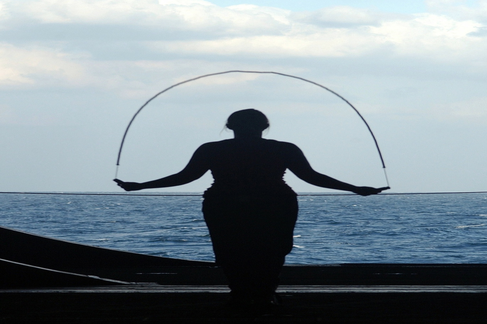

The benefits of adding rope jumping, in your fitness routine.
By lifehack.org
Jumping rope is like getting an all-in-one stress-busting, strength-building, endurance-boosting, HIIT cardio machine that also fights against sports injuries, and it costs basically nothing. Jumping rope will do wonders for any workout, and there are tons of reasons why you need to incorporate it into your fitness plan!
1. Improves Coordination
Jumping rope actually improves your coordination by making you focus on your feet. Whether or not you’re paying attention to them, your brain is aware of what your feet are doing. This practice, over and over again, makes you “lighter” on your feet. The more tricks you can do with the jump rope, the more conscious and coordinated you have to be.
2. Decreases Foot and Ankle Injuries and Improves Bone Density
Jumping rope not only improves your foot coordination but also increases your strength in the muscles surrounding your ankle joint and in your foot, decrease the chance of injury to those areas. It is said, that the best way to improve bone density, is simply jumping up and down.
3. Burns Major Calories
Compared to jogging for 30 minutes, jumping rope actually burns more calories. According to Science Daily, “This aerobic exercise can achieve a “burn rate” of up to 1300 calories per hour of vigorous activity, with about 0.1 calories consumed per jump, while jogging, burns about 600-700.
4. Improves Cardiovascular Health and Breathing Efficiency
According to the American College of Sports Medicine, skipping rope is highly recommended for aerobic conditioning. In order to increase your heart and lung health you must do it three to five times per week for 12 to 20 minutes at a time. In addition to improved heart health and stamina, jumping rope also improves how efficiently you breathe.
5. Makes You Smarter
Believe it or not, jumping rope can make you smarter. According the Jump Rope Institute, jumping aids in the development of the left and right hemispheres of your brain, which further enhances spacial awareness, improves reading skills, increases memory and makes you more mentally alert. Jumping on the balls of your feet requires your body and mind to make neural muscular adjustments to imbalances created from continuous jumping. As a result jumping improves dynamic balance and coordination, reflexes, bone density and muscular endurance.
6. Full-Body Training
When initiating the beginning phase of a jump rope exercise, you rely on the lower body to generate power and lift you off the ground. To perform this move, you need to recruit the powerful muscles in your quadriceps, hamstrings and glutes. You also need to rely on your calves to help you hop when the rope goes under your feet, which the American Council on Exercise says helps strengthen the calf muscles and improves the elasticity of the surrounding tendons and fascia. It's obvious that jump rope benefits your lower body, but it's not just these muscles that do all the work. The muscles in your upper body, and more specifically, the shoulders, biceps, triceps and forearms all work together to rotate the rope around your body. And last, but certainly not least, your abdominal muscles will feel the burn when skipping rope. Since balance, athleticism and coordination are required to perform this move successfully, you will need to rely on your core muscles to generate power, support your lower back and keep your posture upright. All these benefits are greatly echanced if you do different and certain variation of the exercise , or if you do it with different type of ropes(weighted or speed ropes i.e.).
Jumping rope is an easy exercise , that can be done by anyone and at any fitness level. It is a fan way of working out and there are plenty of skills that you can develop throughout your training. Start skipping today, and the immidiate results won't disappoint you!
Have you tried everything and still nothing worked for you? Here are some tips for you to lose weight effectively.
By Healthy Life